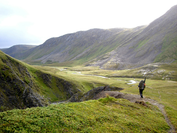

Etappe 1: Nordkapp - Skaidi
Mandag 08. September 2008 av: Montarou
De første skrittene er tatt og så er eventyret i gang. Overgangen fra å skulle gjøre det til å gjøre det, å faktisk være i gang, er som en prikk på tidslinjen; du vet ikke at du er der før du ser tilbake og finner deg selv på andre siden av det kritiske punktet. Det er mange små skritt igjen, vi kan bare ta et av gangen og landet er så langt. Ettersom vi forserer daler, elver, bekker og fjell, går dagen og kreftene avtar på ettermiddagen. Jeg merker at føttene er mindre presise i sin plassering der nede mellom steinene. For det er nemlig ingen stier så langt nord. Jeg sklir et par ganger og merker at det er på tide å finne teltplass. Med ett bryter en lumsk tankerekke inn i hodet; distansen er på 3000 km, med ca 2 skritt per meter vil det si 6 000 000 skritt, minst! Da har jeg ikke en gang tatt med alle de ekstra skrittene rundt vann, upresis kompasskurs, ut og pisse om natta osv. 6 000 000 skritt og ett feilsteg er nok til å spolere alt. Et overtråkk, et stygt fall, en vrikket fot eller en knekt arm. Med ett fortoner turen seg som umulig. Men teltplassen lokaliseres, liggeunderlaget rulles ut og soveposen trekkes ut av sitt trygge (100% vanntette) trekk og primusen fyres. Med middagen trygt plassert i magen ser alt plutselig bedre ut og det slår meg hvor mye som avgjøres av psyken.

Før avgang fra Nordkapp er Emil hos frisøren. Den unge damen har en datter på to år som hadde blitt redd og spurt "hva det der er" da solen tittet frem (!). Kanskje ikke så rart da det har vært totalt fem dager med sol i Honningsvåg hittil i år. Det aner meg at været ikke er det beste her oppe.
Det finnes dårlig vær og det finnes dårlig klær. Vi har nok av begge deler; jakka mi (den gamle, før jeg fikk ny fra helsport, red.anm.) suger vann som en svamp, men kan allikevel tilby noe beskyttelse mot vinden (som vi heldigvis har i ryggen). Værgudene ser ut til å øse av sitt sinne ved å skjenke oss regn og vind hver dag. Nattefrosten har også meldt sin ankomst. Først den sjette dagen ser jeg min diffuse skygge i lyngen som avslører solens fremtreden på himmelen, om enn bare for noen minutter.
På ryggen og opp langt over hodet har vi noen beist av noen sekker som former kroppen som de selv vil. De første dagene bikker seletøyet 30 kg. De gamle Crispi-skoene tar offisielt inn vann på surklende vis og store deler av dagen er det mer vann inni skoene enn utenfor. Men jeg trekker på meg smilet og vet at på Skaidi Hotell ligger det nye sko fra Alfa! Redningen er nær! Tusen takk til Mette Anita Rud på Alfa Skofabrikk!
Ved ankomst på det lukseriøse Skaidi Hotell gnir vi av oss det som såpe kan løse opp og håper resten forsvinner på sikt. Den varme dusjen, maten og sengen er rett og slett herlig. Jeg forstår på mange måter hvorfor folk flest bor i "sivilisasjonen" og trives best der. Det føles bra å kunne innta frokost sittende ved et bord. Det er en komfort og enkelhet i sivilisasjonen som ikke skal stikkes under en stol. Har du lyst på sjokolade er det ingen sak å få tak i det (så mye du vil ha!), er det kaldt skrur du på ovnen og ligger du vondt bytter du bare stilling i den mye senga . Det ironiske er at det tar bare et par dager før disse godene blir tatt for gitt og vi ikke setter skikkelig pris på det slik som vi gjorde ved ankomst. Naurlig nok vil mange si, men ærlig talt; vi er omgitt av luksus, vannvittig god buffet med alt man kan ønske seg, svømmebasseng, badstue og myke senger, men allerede er det noe som vil ut igjen!
Kadaver status:
|
FØTTER: KNÆR: RYGG: SKULDRE: MORAL: |
MARIUS Søkkvåt OK Støl om morgenen Ømme Væravhengig |
EMIL Halvvåt / Halvkald OK OK (Sår) Bra (Knirker) Ser frem til svømmebasseng |
<< Tilbake til Reisebrev